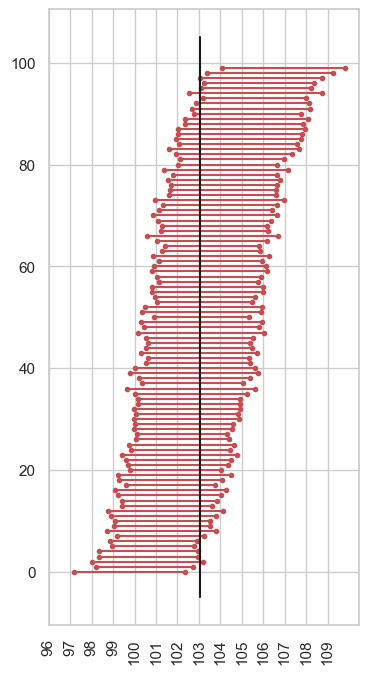

Contents
#Set-up Python libraries - you need to run this but you don't need to change it
import numpy as np
import matplotlib.pyplot as plt
import scipy.stats as stats
import pandas
import seaborn as sns
sns.set_theme()
sns.set_style('white')
mathsIQ_60 = pandas.read_csv('https://raw.githubusercontent.com/jillxoreilly/StatsCourseBook/main/data/mathsIQ_60.csv')
mathsIQ_30k = pandas.read_csv('https://raw.githubusercontent.com/jillxoreilly/StatsCourseBook/main/data/mathsIQ_30k.csv')
mathsIQ_60.mean()
ID_code 536734.666667
IQ 104.600000
dtype: float64
mathsIQ_30k.mean()
ID_code 549210.362333
IQ 103.072600
dtype: float64
n=60
stats.norm.cdf(mathsIQ_30k.mean(), mathsIQ_60.mean(), (mathsIQ_60.std()/(n**0.5)))
array([0.63875394, 0.14896124])
stats.norm.cdf(mathsIQ_60.mean(), mathsIQ_30k.mean(), (mathsIQ_60.std()/(n**0.5)))
array([0.36124606, 0.85103876])
sns.histplot(mathsIQ_60['IQ'], bins=range(85,150,5), color=[0.75,0.75,0.75]).set(xlabel='participant IQ')
[Text(0.5, 0, 'participant IQ')]
sns.histplot(mathsIQ_30k['IQ'], bins=range(85,150,1), color=[0.75,0.75,0.75]).set(xlabel='participant IQ')
[Text(0.5, 0, 'participant IQ')]
nReps=10000
m=np.empty(nReps)
n=60
for i in range(nReps):
sample = mathsIQ_30k['IQ'].sample(n)
m[i]=sample.mean()
sns.histplot(m, bins=np.arange(99,109,0.25), color=[0.75,0.75,0.75]).set(xlabel='sample mean IQ')
plt.plot([mathsIQ_30k['IQ'].mean(), mathsIQ_30k['IQ'].mean()],[0, 1000],'k')
plt.plot([mathsIQ_60['IQ'].mean(), mathsIQ_60['IQ'].mean()],[0, 1000],'r--')
[<matplotlib.lines.Line2D at 0x7faa13db1100>]
sns.histplot(m, bins=np.arange(99,109,0.2), color=[0.75,0.75,0.75]).set(xlabel='sample mean IQ')
plt.plot([mathsIQ_30k['IQ'].mean(), mathsIQ_30k['IQ'].mean()],[0, 1000],'k')
plt.plot([mathsIQ_60['IQ'].mean(), mathsIQ_60['IQ'].mean()],[0, 1000],'r--')
x = np.arange(98.9,109.1,0.2)
freq = stats.norm.pdf(x, mathsIQ_60['IQ'].mean(), mathsIQ_60['IQ'].std()/(n**0.5)) * nReps * 0.2
plt.plot(x,freq,'r')
[<matplotlib.lines.Line2D at 0x7faa0e79d670>]
mathsIQ_60['IQ'].std()
11.366319559953567
mathsIQ_30k['IQ'].std()
9.95302121607849
sns.set_style('whitegrid')
nReps=100
n=60
m=np.empty(nReps)
s=np.empty(nReps)
plt.figure(figsize=[4,8])
for i in range(nReps):
sample = mathsIQ_30k['IQ'].sample(n)
m[i]=sample.mean()
s[i]=sample.std()
plt.plot([m[i]-1.96*s[i]/(n**0.5),m[i]+1.96*s[i]/(n**0.5)],[i,i],'r.-')
plt.plot([mathsIQ_30k['IQ'].mean(),mathsIQ_30k['IQ'].mean()],[0-5,nReps+5],'k')
plt.xticks(np.arange(96,110),rotation=90)
plt.show()

plt.figure(figsize=[4,8])
ix=np.argsort(m)
for i in range(nReps):
plt.plot([m[ix[i]]-1.96*s[ix[i]]/(n**0.5),m[ix[i]]+1.96*s[ix[i]]/(n**0.5)],[i,i],'r.-')
plt.plot([mathsIQ_30k['IQ'].mean(),mathsIQ_30k['IQ'].mean()],[0-5,nReps+5],'k')
plt.xticks(np.arange(96,110),rotation=90)
plt.show()

CI[np.argsort(m)]
---------------------------------------------------------------------------
NameError Traceback (most recent call last)
/var/folders/q4/twg1yll54y142rc02m5wwbt40000gr/T/ipykernel_1313/36559651.py in <module>
----> 1 CI[np.argsort(m)]
NameError: name 'CI' is not defined
CI
[array([102.25 , 104.33333333, 103.21666667, 103.3 ,
102.53333333, 103.48333333, 102.05 , 102.86666667,
103.28333333, 102.51666667, 104.43333333, 102.71666667,
102.91666667, 102.81666667, 104.05 , 103.65 ,
103.41666667, 102.88333333, 104.91666667, 102.75 ,
101.33333333, 106.35 , 103.61666667, 101.41666667,
103.96666667, 102.28333333, 102.66666667, 102.75 ,
105.45 , 104.31666667, 102.16666667, 103.68333333,
101.63333333, 102.31666667, 102.66666667, 103.53333333,
102.91666667, 103.23333333, 104.9 , 103.15 ,
102.38333333, 102.48333333, 102.11666667, 102.75 ,
102.51666667, 102. , 103.16666667, 101.61666667,
102.76666667, 103.26666667, 101.48333333, 103. ,
103.06666667, 103.16666667, 100.7 , 104.41666667,
104.05 , 102.6 , 104.65 , 102.85 ,
102.98333333, 102.25 , 101.78333333, 100.65 ,
102.46666667, 102.21666667, 103.1 , 103.16666667,
103.13333333, 102.81666667, 104.76666667, 100.31666667,
103.76666667, 105.26666667, 103.4 , 101.3 ,
104.2 , 102.36666667, 102.03333333, 101.35 ,
104.13333333, 105.46666667, 101.76666667, 104.66666667,
104.1 , 101.65 , 102.6 , 101.21666667,
102.21666667, 104.88333333, 102.43333333, 105.46666667,
102.78333333, 101.28333333, 104.46666667, 102.31666667,
101.53333333, 102.78333333, 102.21666667, 103.98333333]),
array([ 9.06964578, 9.53613408, 10.07781868, 9.87429465, 10.70476952,
9.62428367, 8.34718059, 9.08615387, 10.3646918 , 8.35340521,
9.26148699, 10.14987963, 7.19296188, 10.15889302, 9.19916172,
9.52040627, 9.79673357, 9.86019505, 11.55721459, 9.62099576,
9.91432223, 10.69266341, 10.68039812, 8.68134893, 12.05631794,
10.94375709, 8.59772667, 9.3511986 , 12.94633644, 12.66449952,
9.55655187, 12.10615709, 9.89430013, 8.88436384, 9.68778134,
9.49480976, 10.24329738, 11.49114127, 9.83370199, 8.37839231,
9.29933781, 10.39473737, 9.06677987, 10.04165055, 9.9872659 ,
9.65857834, 8.85699315, 9.71647503, 12.15906813, 9.85292982,
9.33099749, 9.27544599, 9.34075573, 9.22995614, 9.05968907,
10.70924148, 11.43652341, 10.27123678, 10.61630502, 11.18992434,
12.95165936, 10.27688702, 8.00654746, 7.68847916, 10.39795721,
9.25915336, 8.50662753, 9.8345063 , 9.18079548, 8.61904015,
9.16398009, 8.98113214, 9.43014759, 10.99748302, 10.52068181,
8.2816931 , 11.82327495, 8.7720022 , 10.64841305, 7.32958944,
9.34728578, 10.1771873 , 8.7843595 , 9.76792861, 9.99949151,
9.42198115, 9.59908188, 10.01708992, 11.69106811, 11.52166959,
9.82450528, 11.16208271, 11.35123628, 8.14090252, 9.57126113,
8.96980182, 8.37766738, 11.05317144, 9.60947919, 10.91491231])]